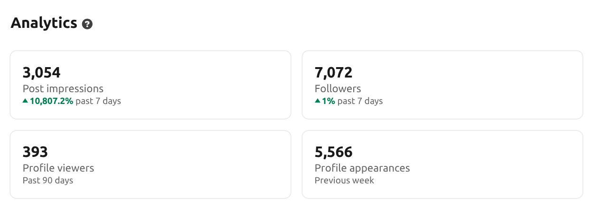
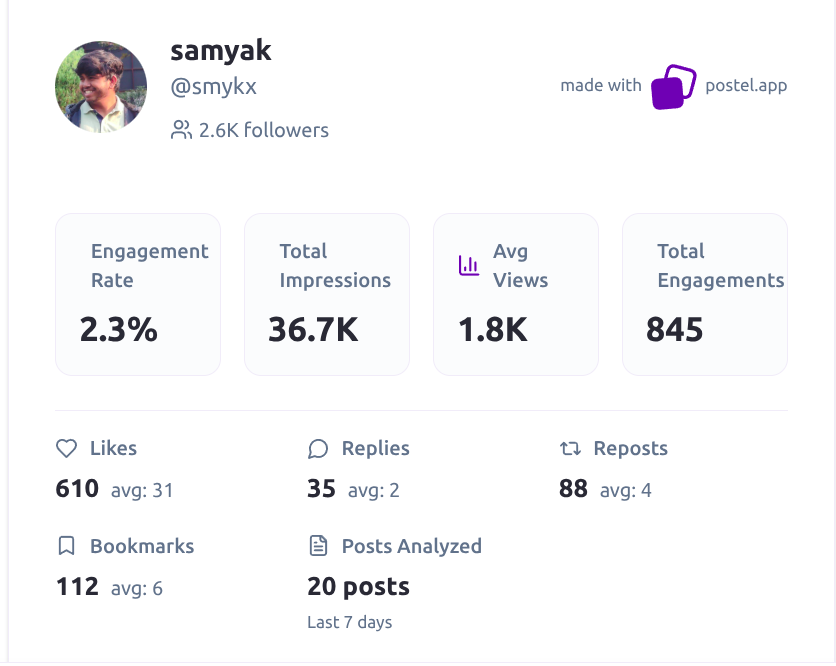

Samyak shapes narratives around developer tools & deeptech.
DevRel @ heart. Currently leading growth at Quarq Labs after starting there as a technical writing intern. Deeply invested in agents, RAG, and the infrastructure powering the next generation of builders. Let's talk.
I've led technical clubs, tried starting a biotech research lab (failed miserably), ran an AI agency (learned it wasn't for me), and now host a podcast about deeptech founders.
Looking back, I've always been doing DevRel—building communities, creating content, and helping people navigate complex technical landscapes. The title just didn't exist yet.
At Quarq Labs, I started as a pure technical writer during a 3-month internship and grew into leading growth: turning deep technical work into clear narratives, launch moments, and distribution.
Quarq Labs growth
Started as a technical writing intern on a 3-month stint, writing deeply technical pieces for an embodied intelligence startup. Now leading growth across narrative, content strategy, launches, and distribution, including growing @quarqlabs on X from 100 to 1k followers in under a month.
Deep Research Agent github
Full-stack agent that autonomously researches topics across the web.
RAG from Scratch colab
Notebook series breaking down retrieval-augmented generation step by step.
Git from Scratch wip
Rebuilding Git's core functionality in Python to understand it deeply.
Add overview descriptions to API and SDK documentation opentelemetry-python
Replaced TODO placeholders in docs/api/index.rst, docs/sdk/index.rst, and docs/sdk/environment_variables.rst with concise descriptions explaining what the API and SDK are and their relationship to each other.
Add E2E tests for llm.call with multiple image formats mirascope
Expanded image E2E tests from single PNG-only to parametrized tests covering all supported MIME types: PNG, JPEG, WebP, GIF, HEIC, and HEIF. Received compliment from maintainer (ex-Google Brain, co-author of TensorFlow).
Improve language support documentation for code chunker chonkie
Added list of languages supported by tree-sitter-language-pack, documented Auto language detection support by Magik, and added example for initializing code chunker with auto detection.
Add LlamaIndex + Chonkie document Q&A tutorial chonkie cookbook
Created cookbook tutorial for document Q&A using LlamaIndex and Chonkie. Got mentioned in Qdrant meeting and received compliment from YC engineer.
Docs: fix trace_config docstring opentelemetry-python
Documented the unused trace_config parameter in Span.__init__. The parameter was a placeholder from the original span implementation but was never wired up after upstream OpenTelemetry protocol removed TraceConfig in proto v0.20.
- Understanding Hermes From An Agentic Memory Perspective agents
- Quarq Labs Articles Index growth
- 98.2% on LongMemEval: How We Built an Open-Source Agent That Actually Remembers agents
- The Map of Robot Learning robotics
- The Tooling Gap in Robot Learning robotics
- RAG from Scratch Series series
- Asha AI Blog Series series
- Deep Research: Understanding Autonomous Agents ai
- You Thought Looping Mutates the List? Cute. fundamentals
- Beginner's Guide to uv for Python Package Management fundamentals
- How to Read a Real Open Source Codebase fundamentals
- Scraping Webpages as Markdown with Firecrawl tutorial
- Is n8n a Grift? opinion




GenAI from First Principles
Educational content covering LLMs, RAG, and agents from the ground up.
Backend from Scratch
Concept handbook for building backend systems from first principles.
Let's build something.
If you're hiring for DevRel—or just want to chat about devtools, AI agents, or deeptech startups.
Book a call